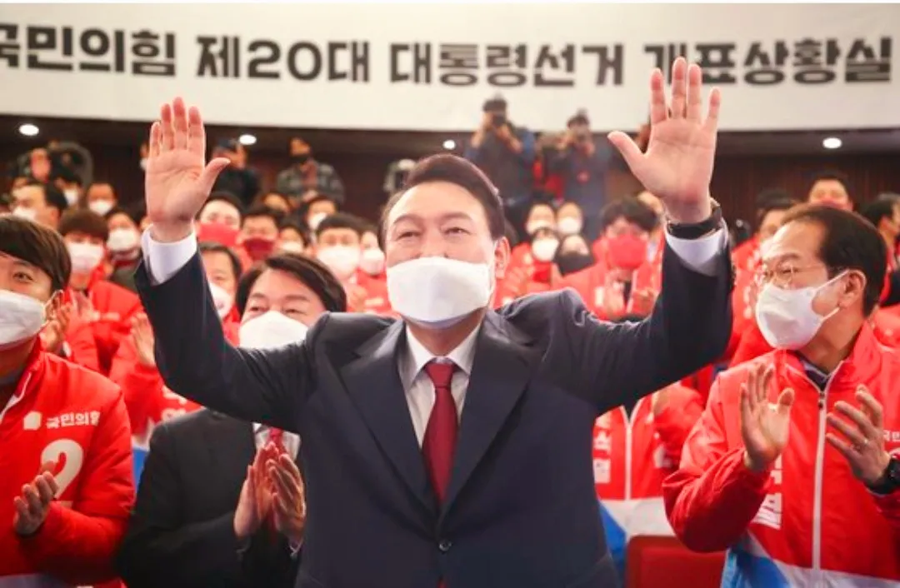

선거 정보: 제 20대 대통령 선거
✔ 투표일: 2022년 3월 9일 (수) 06:00 ~ 19:30
✔ 사전투표: 2022년 3월 4일 ~ 3월 5일 (2일간)
✔ 선거권자: 2004년 3월 10일 이전 출생한 대한민국 국민
✔ 후보자 등록 기간: 2022년 2월 13일 ~ 2월 14일 (2일간)
✔ 선거운동 기간: 2022년 2월 15일 ~ 3월 8일 (22일간)
주요 후보자 정보

정당 구도
양강 구도 (더불어민주당 vs 국민의힘)
주요 쟁점
✔ 정권 심판론 vs 정권 재창출론: 문재인 정부에 대한 평가와 정권 교체 요구
✔ 코로나19 대응: 손실보상, 백신 수급, 방역패스 등 민생 대책
✔ 부동산 문제: 집값·전세난 해소 위한 공급 확대, 세금 정책
✔ 세대·젠더 갈등: 2030 표심과 젠더 이슈에 대한 입장차
✔ 공정 담론: 능력주의와 제도 개선 논의
투표율
전체 투표율: 77.2%
| 성별 | 투표율 |
|---|---|
| 남성 | 76.8% |
| 여성 | 77.5% |
| 18세 | 71.3% | 40대 | 74.2% |
| 19세 | 72.5% | 50대 | 81.4% |
| 20~24 | 71.6% | 60대 | 87.6% |
| 25~29 | 70.4% | 70대 | 86.2% |
| 30~34 | 70.9% | 80대 + | 61.8% |
| 35~39 | 70.6% |
| 18세 | 67.8% | 40대 | 72.8% |
| 19세 | 70.7% | 50대 | 80.8% |
| 20~24 | 70.0% | 60대 | 88.2% |
| 25~29 | 66.3% | 70대 | 89.2% |
| 30~34 | 68.3% | 80대 + | 75.0% |
| 35~39 | 69.0% |
| 18세 | 75.0% | 40대 | 75.7% |
| 19세 | 74.5% | 50대 | 82.0% |
| 20~24 | 73.4% | 60대 | 87.1% |
| 25~29 | 75.2% | 70대 | 83.6% |
| 30~34 | 73.7% | 80대 + | 55.0% |
| 35~39 | 72.2% |
| 지역 | 선거인 수 | 전체 투표 수 | 사전 투표 수 | 사전 투표율 | 전체 투표율 | 기권 수 |
|---|---|---|---|---|---|---|
| 서울 | 8,346,647 | 6,502,820 | 3,107,455 | 37.23% | 77.9% | 1,843,827 |
| 부산 | 2,921,510 | 2,200,171 | 1,000,499 | 34.25% | 75.3% | 721,339 |
| 대구 | 2,046,714 | 1,611,560 | 694,117 | 33.91% | 78.7% | 435,154 |
| 인천 | 2,519,225 | 1,883,916 | 858,688 | 34.09% | 74.8% | 635,309 |
| 광주 | 1,209,206 | 985,512 | 583,717 | 48.27% | 81.5% | 223,694 |
| 대전 | 1,233,177 | 945,416 | 450,851 | 36.56% | 76.7% | 287,761 |
| 울산 | 942,210 | 735,503 | 332,600 | 35.30% | 78.1% | 206,707 |
| 세종 | 288,895 | 231,857 | 127,444 | 44.11% | 80.3% | 57,038 |
| 경기 | 11,433,288 | 8,764,896 | 3,847,821 | 33.65% | 76.7% | 2,668,392 |
| 강원 | 1,333,621 | 1,003,979 | 512,416 | 38.42% | 75.3% | 329,642 |
| 충북 | 1,365,033 | 1,020,639 | 493,605 | 36.16% | 74.8% | 344,394 |
| 충남 | 1,796,474 | 1,325,555 | 623,054 | 34.68% | 73.8% | 470,919 |
| 전북 | 1,533,125 | 1,235,322 | 745,566 | 48.63% | 80.6% | 297,803 |
| 전남 | 1,581,278 | 1,281,852 | 813,530 | 51.45% | 81.1% | 299,426 |
| 경북 | 2,273,028 | 1,774,097 | 932,498 | 41.02% | 78.0% | 498,931 |
| 경남 | 2,809,907 | 2,146,974 | 1,009,115 | 35.91% | 76.4% | 662,933 |
| 제주 | 564,354 | 409,646 | 190,626 | 33.78% | 72.6% | 154,708 |
| 형식 | 투표 수 | 투표율 | 비고 |
|---|---|---|---|
| 재외투표 | 161,878 | 71.60% | [1] |
| 선상투표 | 3,108 | 95% | |
| 사전투표 | 16,323,602 | 36.93% |
| 사전투표 (2022년 3월 4일, 1일차) | 사전투표 (2022년 3월 5일, 2일차) | 선거일 투표 (2022년 3월 9일) | 비고 | ||||||
|---|---|---|---|---|---|---|---|---|---|
| 시간 | 누적 | 투표율 | 시간 | 누적 | 투표율 | 시간 | 누적 | 투표율 | |
| 7시 | 148,255 | 0.35% | 7시 | 5,124,970 | 12.06% | 7시 | 1,051,670 | 2.5% | |
| 8시 | 321,146 | 0.76% | 8시 | 5,311,945 | 12.50% | 8시 | 2,364,618 | 5.6% | |
| 9시 | 590,984 | 1.39% | 9시 | 5,584,851 | 13.15% | 9시 | 3,998,315 | 9.4% | |
| 10시 | 1,010,843 | 2.38% | 10시 | 6,011,380 | 14.15% | 10시 | 5,994,693 | 14.1% | |
| 11시 | 1,500,894 | 3.53% | 11시 | 6,557,478 | 15.44% | 11시 | 8,241,211 | 19.4% | |
| 12시 | 1,972,446 | 4.64% | 12시 | 7,147,113 | 16.82% | 12시 | 10,394,831 | 24.5% | |
| 13시 | 2,463,125 | 5.80% | 13시 | 7,720,303 | 18.17% | 13시 | 23,596,567 | 55.5% | [2] |
| 14시 | 2,998,163 | 7.06% | 14시 | 8,350,999 | 19.66% | 14시 | 25,426,783 | 59.9% | |
| 15시 | 3,519,147 | 8.28% | 15시 | 9,015,649 | 21.22% | 15시 | 27,059,111 | 63.7% | |
| 16시 | 4,016,380 | 9.45% | 16시 | 9,675,356 | 22.78% | 16시 | 28,522,484 | 67.1% | |
| 17시 | 4,501,608 | 10.60% | 17시 | 10,338,834 | 24.34% | 17시 | 29,768,033 | 70.1% | |
| 18시 | 4,970,902 | 11.70% | 18시 | 11,072,310 | 26.06% | 18시 | 30,897,679 | 72.7% | |
| 19시 | 31,902,410 | 75.1% | |||||||
| 20시 | 32,808,377 | 77.2% | |||||||
개표 결과

윤석열(국민의힘) 당선 (득표율 48.56%)
| 지역 | 이재명 | 윤석열 |
|---|---|---|
| 전국 | 16,147,738 (47.83%) | 16,394,815 (48.56%) |
| 서울특별시 | 2,944,981 (45.73%) | 3,255,747 (50.56%) |
| 부산광역시 | 831,896 (38.15%) | 1,270,072 (58.25%) |
| 대구광역시 | 345,045 (21.60%) | 1,199,888 (75.14%) |
| 인천광역시 | 913,320 (48.91%) | 878,560 (47.05%) |
| 광주광역시 | 830,058 (84.82%) | 124,511 (12.72%) |
| 대전광역시 | 434,950 (46.44%) | 464,060 (49.55%) |
| 울산광역시 | 297,134 (40.79%) | 396,321 (54.41%) |
| 세종특별자치시 | 119,349 (51.91%) | 101,491 (44.14%) |
| 경기도 | 4,428,151 (50.94%) | 3,965,341 (45.62%) |
| 강원도 | 419,644 (41.72%) | 544,980 (54.18%) |
| 충청북도 | 455,853 (45.12%) | 511,921 (50.67%) |
| 충청남도 | 589,991 (44.96%) | 670,283 (51.08%) |
| 전라북도 | 1,016,863 (82.98%) | 176,809 (14.42%) |
| 전라남도 | 1,094,872 (86.10%) | 145,549 (11.44%) |
| 경상북도 | 418,371 (23.80%) | 1,278,922 (72.76%) |
| 경상남도 | 794,130 (37.38%) | 1,237,346 (58.24%) |
| 제주특별자치도 | 213,130 (52.59%) | 173,014 (42.69%) |
| 재외국민 | 88,397 (59.77%) | 53,524 (36.19%) |